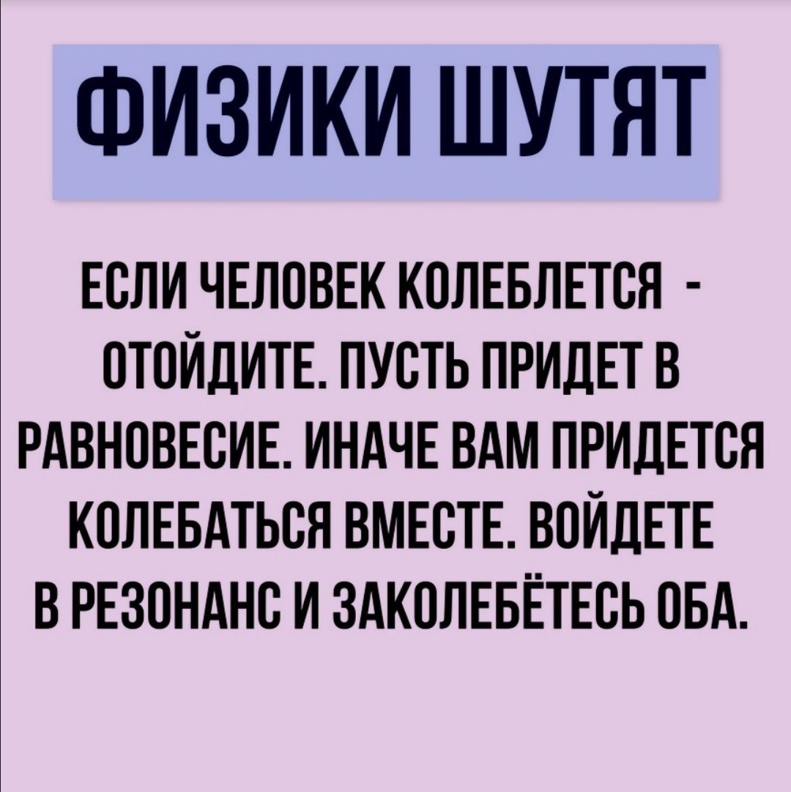

<!DOCTYPE html>
<html lang="ru">
	<head>
		<meta charset="utf-8">
		<meta name="viewport" content="width=device-width, initial-scale=1.0, maximum-scale=1.0, user-scalable=no">

		<title>Физика</title>

		<link rel="stylesheet" href="dist/reset.css">
		<link rel="stylesheet" href="dist/reveal.css">
		<link rel="stylesheet" href="dist/theme/serif.css" id="theme">
		<link rel="stylesheet" href="custom.css">
		<script type="text/javascript" src="js/main.js"></script>
		<!--<link rel="stilesheet" href="//cdnjs.cloudflare.com/ajax/libs/KaTeX/0.5.1/katex.min.css">-->
		
		
		<!-- Theme used for syntax highlighted code -->
		<link rel="stylesheet" href="plugin/highlight/monokai.css" id="highlight-theme">
		<style>
			.left{
				float:left;
			}
			.right{
				float:right;
			}
			.clear{
				clear:both;
			}
			.tr{width: 20%; height:50%;}
			#sub{
				width: 40%; height:80%;background-color:rgb(157, 202, 176);font-size: 20pt;
			}
			#karp1{
				width: 100%;
			}
			#karp2{
				width: 70%;
			}
			/*#game_matrix table td{
				border: 1px solid black;
				cursor:pointer;
				width: 100px;
				height: 100px;
			}
			#game_matrix #name{
				width: 100%;
				height: 40px;
				line-height: 40px;
				font-size:18px;
			}
			#game_matrix #find{
				width: 100%;
				height: 120px;
				line-height: 120px;
				border: 1px solid black;
			}
			#game_matrix #start{
				width: 100%;
				height: 40px;
				line-height: 40px;
				font-size: 18px;
				color:black;
				background-color: coral;
			}*/
		</style>
	</head>
	<body>
		<div class="reveal">
			<div class="slides">
				<section data-markdown class="center">
					<script type="text/template">
						Физика
						======
					</script>
				</section>
				<section data-markdown class="center">
					<script type="text/template">
						### Физические величины
						Физическая величина – это характеристика одного из свойств физического объекта 
                        (явления или процесса), общая в качественном отношении многим объектам, 
                        но в количественном отношении индивидуальная для каждого объекта.
					</script>
				</section>


                <section data-markdown class="center">
					<script type="text/template">
                         ### Скорость
					</script>
				</section>


                <section data-markdown class="center">
					<script type="text/template">
                        Скоростью движения называется величина, численно равная пути, проходимому телом в 
                        единицу времени. Формула нахождения скорости:
                        $V=\frac{S}{t}$ , 
                        где (S) — пройденный путь; (t) — время. Чем больше скорость, тем больший путь 
                        проходит тело за единицу времени. Если путь измеряется в метрах (м), а время 
                        движения в секундах (с), то скорость тела измеряется в (м/с). Метр в секунду 
                        (м/с) — единица скорости в международной системе единиц.
					</script>
				</section>


                <section data-markdown class="center">
					<script type="text/template">
                         ### Длина
					</script>
				</section>

                <section data-markdown class="center">
					<script type="text/template">
                         Длина  – это физическая величина, представляющая собой числовой показатель 
                         протяженности линий. Это одна из основных единиц измерения, через которую 
                         определяются иные производные единицы. В международной системе единиц (СИ) 
                         основной единицей длины считается метр.

					</script>
				</section>


                <section data-markdown class="center">
					<script type="text/template">
                         ### Масса
					</script>
				</section>

                <section data-markdown class="center">
					<script type="text/template">
                        Масса $m$ величина, показывающая, как тело сопротивляется изменению скорости
                         (насколько оно инертно) и как участвует в гравитационном взаимодействии
                          (как сильно притягивается к Земле). Формула нахлждения массы: 
                          <br>\\(m = p \cdot V\\), где $p$ - плотность тела, а $V$ - объём тела.

					</script>
				</section>


                <section data-markdown class="center">
					<script type="text/template">
                         ### Площадь
					</script>
				</section>


                <section data-markdown class="center">
					<script type="text/template">
                        Площадь - это пространство, занимаемое внутри границей какой-либо фигуры.
                         Это общая поверхность, покрытая периметром фигуры. Он измеряется в квадратных 
                         единицах. 
                         Формула площади: 
                         <br> $S=\frac{F}{P}$, где $P$ - плотность тела, а $F$ - cила.

					</script>
				</section>


                <section data-markdown class="center">
					<script type="text/template">
                         ### Объём
					</script>
				</section>


                <section data-markdown class="center">
					<script type="text/template">
                        Объём — количественная характеристика пространства, занимаемого телом или 
                        веществом. Объём тела определяется его формой и линейными размерами. 
                        Основное свойство объёма — аддитивность , то есть объём любого тела равен 
                        сумме объёмов его (непересекающихся) частей. Формула объёма:
                        <br> $V=\frac{m}{P}$, где $P$ - плотность тела, а $m$ - Масса.
					</script>
				</section>


                <section data-markdown class="center">
					<script type="text/template">
                         ### Давление
					</script>
				</section>


                <section data-markdown class="center">
					<script type="text/template">
                        Давление - это физическая величина, характеризующая интенсивность
                         механического воздействия среды на поверхность тела в направлении, 
                         перпендикулярном к этой поверхности. Давление численно равно отношению 
                         усредненной перпендикулярной составляющей силы к величине поверхности:
                         <br> $P=\frac{Fn}{S}$, где $Fn$ - усредненная перпендикулярная составляющая силы ,
                          а $S$ - площадь поверхности, где эта сила действует.
					</script>
				</section>

                
				<section data-markdown class="center">
					<script type="text/template">
						## Какие бывают величины отображающие температуру объекта?
					</script>
				</section>
				<section data-markdown class="center">
					<script type="text/template">
                         Все принятые величины температуры:
						 градус Цельсия,
                         градус Фаренгейт,
                         Кельвин,
                         градус Реомюра,
                         градус Ранкина, 
                         градус Делиля,
                         градус Куда,
                         градус Дальтона, 
                         градус Ньютона,
                         Лейденский градус,
                         Планковская температура.
                         Основными из них являются - Градус Цельсия, градус Фаренгейта и Кельвин.
					</script>
				</section>
				<section data-markdown class="center">
					<script type="text/template">
						### Конвертация из Цельсии в Кельвины<br> 
						Градус Цельсия назван в честь шведского учёного Андерса Цельсия, предложившего в 
                        1742 году новую шкалу для измерения температуры.
                       
					</script>
				</section>


				<section data-markdown class="center">
					<script type="text/template">
				Согласно современному определению, один градус Цельсия равен одному кельвину 
				(K), а ноль шкалы Цельсия установлен таким образом, что температура тройной точки
				 воды равна 0,01 °C. В итоге, шкалы Цельсия и Кельвина сдвинуты на 273,15 единиц:
				  tc = tk - 273,15
				<br>\\(T(K)=T(C) + 273,15\\)

			</script>
		</section>


                <section data-markdown class="center">
					<script type="text/template">
						### Конвертация из Кельвина в Фаренгейта <br> 
						Температура T в градусах Фаренгейта (° F) равна температуре T 
                        в Кельвинах (K), умноженной на 9/5, минус 459,67:
                        <br> $T(F)=\frac{T(K) \cdot 9 }{5} - 459,67$
					</script>
				</section>

				<section data-markdown class="center">
					<script type="text/template">
						### Конвертация из Фаренгейта в Цельсии
						На шкале Фаренгейта температура таяния льда равна +32 °F, а температура кипения 
                        воды +212 °F . Диапазон 0…+100 °F по шкале Фаренгейта примерно соответствует диапазону
                         -17,8…+37,8 °C по шкале Цельсия. Абсолютному нулю на шкале Фаренгейта соответствует 
                         значение -459,67 °F
                        <br> $T(C)=\frac{5}{9} \cdot (T(F) - 32)$

					</script>
				</section>


              
					

                <section data-markdown class="center">
					<script type="text/template">

## Конвертер температуры

Выберите исходную температурную шкалу:
<select id="sourceScale">
<option value="kelvin">Кельвин</option>
<option value="celsius">Цельсий</option>
<option value="fahrenheit">Фаренгейт</option>
</select>

Выберите целевую температурную шкалу:
<select id="targetScale">
<option value="kelvin">Кельвин</option>
<option value="celsius">Цельсий</option>
<option value="fahrenheit">Фаренгейт</option>
</select>

Введите температуру:
<input type="number" id="temperature" placeholder="Температура">

<button onclick="convertTemperature()">Перевести</button>

<div id="result"></div>

</script>
</section>


				


                <section data-markdown class="center">
					<script type="text/template">
						## Задачи<br> Зависимость скорости времени и расстояния
					</script>

				</section>
				<section data-markdown class="center">
					<script type="text/template">
						### Задача <br> Автомобиль двигается со скоростью 80 км/ч. Сколько километров он проедет за 3 часа?(рис. 1).
					</script>
				</section>
				<section data-markdown class="center">
					<script type="text/template">
						
						
                       <br> Ответ: за 3 часа автомобиль проедет 240 километров.
					</script>
				</section>


				<section data-markdown class="center">
					<script type="text/template">
						
						
					</script>
				</section>


                
				<section data-markdown class="center">
					<script type="text/template">
                        ## Расчеты времени, скорости и расстояния

                        <div id="calculator">
                        <label for="time">Время (t):</label>
                        <input type="number" id="time" placeholder="Введите время">
                        
                        <label for="speed">Скорость (v):</label>
                        <input type="number" id="speed" placeholder="Введите скорость">
                        
                        <label for="distance">Расстояние (s):</label>
                        <input type="number" id="distance" placeholder="Введите расстояние">
                        
                        <button id="speedBut" onclick="calculate()">Рассчитать</button>
                        
                        <p id="result2"></p>
                        </div>
                       
					</script>
				</section>


				<section data-markdown class="center">
					<script type="text/template">
                        #### Расчеты давления, усреднённой перпендикулярной составляющей силы, площади поверхности

                        <div id="calculator">
                        <label for="x1"> Давление (P):</label>
                        <input type="number" id="x1" placeholder="Введите Давление">
                        
                        <label for="x2"> Усредненная перпендикулярная составляющая силы (Fn):</label>
                        <input type="number" id="x2" placeholder="Введите перпед. силы">
                        
                        <label for="x3"> Площадь (S):</label>
                        <input type="number" id="x3" placeholder="Введите площадь">
                        
                        <button id="speedBut" onclick="calculate1()">Рассчитать</button>
                        
                        <p id="result3"></p>
                        </div>
                       
					</script>
				</section>


				<section data-markdown class="center">
					<script type="text/template">
                        #### Расчеты объёма, плотности тела, массы тела

                        <div id="calculator">
                        <label for="y1"> Объём (V):</label>
                        <input type="number" id="y1" placeholder="Введите Объём">
                        
                        <label for="y2"> Плотность тела (P):</label>
                        <input type="number" id="y2" placeholder="Введите Плотность">
                        
                        <label for="y3"> Масса (m):</label>
                        <input type="number" id="y3" placeholder="Введите Массу">
                        
                        <button id="speedBut" onclick="calculate2()">Рассчитать</button>
                        
                        <p id="result4"></p>
                        </div>
                       
					</script>
				</section>


				


				
				<section data-markdown class="center">
					<script type="text/template">
						Если честно, то эти задачи по физики для детей. Вы большие молодцы, что дошли до этого слайда. Все остальные задачи делаются подобно и аналогично, думаю хватит примеров и конвертеров. Отличного утра, дня и вечера, дальше только развлекательный контент!

						
					</script>
				</section>


				
				<section data-markdown class="center">
					<script type="text/template">
						
					</script>
				</section>
				<section data-markdown class="center">
					<script type="text/template">
						
					</script>
				</section>
				<section data-markdown class="center">
					<script type="text/template">
						
					</script>
				</section>
				
				</section>
				
			


				<section data-markdown class="center">
					<script type="text/template">
						
<link rel="stylesheet" href="https://cdnjs.cloudflare.com/ajax/libs/animate.css/4.1.1/animate.min.css">
<style>
.salute {
animation-duration: 5s; /* Длительность анимации */
animation-name: rubberBand; /* Название анимации из Animate.css */
}
</style>


<div class="slide"></div>


<div class="slide salute">Cпасибо за просмотр</div>

</script>


					
					</script>
				</section>


			


					
					</script>
				</section>

			</div>
		</div>

		<script src="dist/reveal.js"></script>
		<script src="plugin/notes/notes.js"></script>
		<script src="plugin/markdown/markdown.js"></script>
		<script src="plugin/highlight/highlight.js"></script>
		<script src="plugin/math/math.js"></script>

		<script>
			Reveal.initialize({
				hash: true,
				center: false,
				slideNumber: true,
				controls:true,
				
				
				// save slide
				history: true,
				slideNumber: true,
				touch: true,
				menu: {
					side: 'left', //Расположение меню
					numbers: true, //Нумерация слайдов
					markers: true, //Маркер посещения
					titleSelector: 'h1, h2, h3, h4, h5, h6', //Заголовки, отображаемые в меню
					useTextContentForMissingTitles: true, //Если заголовка нет, то подставляем первые слова слайда
					hideMissingTitles: false, //Если заголовка нет, то скрываем слайд из меню
					transitions: true, //Установить меню анимации
					openButton: true, //Скрыть кнопку меню
					keyboard: true, //Открытие меню по кнопке m
				},
				dependencies:[
					{
						scr:'plugin/menu/menu.js'
					},{ 
						//Menu
						src: 'plugin/menu/menu.js',
						async: true
					}
				],

				// Learn about plugins: https://revealjs.com/plugins/
				plugins: [ RevealMarkdown, RevealHighlight, RevealNotes, RevealMath.KaTeX ]
			});
		</script>
		
	</body>
</html>
